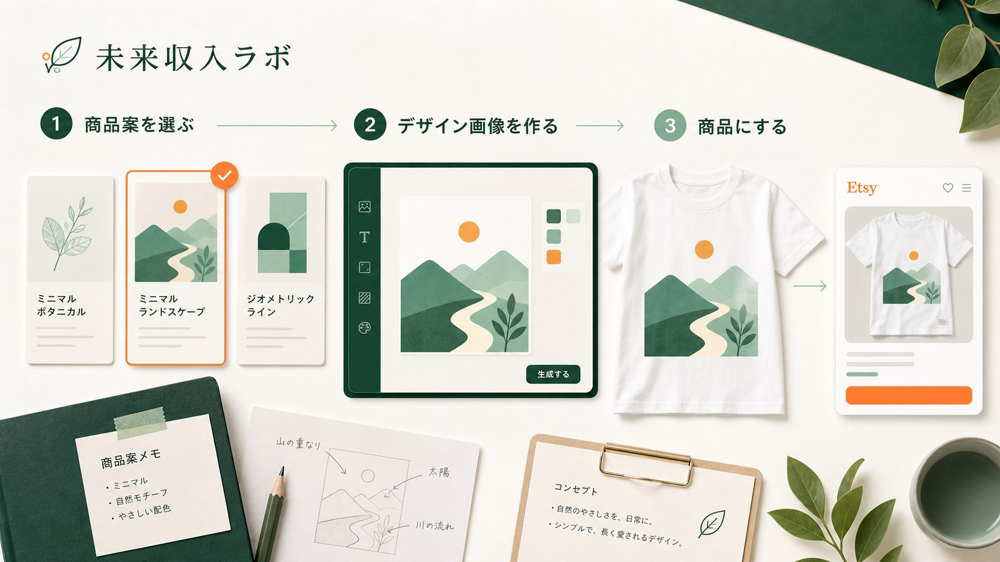

止まっている場所を知る
商品案、画像、設定、運営、継続。まず現在地を分けます。
AI × Etsy × POD
副業を始めたいのに、商品案、デザイン、出品設定で止まってしまう。未来収入ラボは、最初の判断を順番に減らし、Etsyへ商品を出すところまでつなぎます。

商品案、画像、設定、運営、継続。まず現在地を分けます。
無料PDFを順番に進め、販売に使うデザイン画像を1枚作ります。
動画、セルフ教材、直接支援から、自分に合う進め方を選びます。
START FREE
AI商品づくり無料スターターキットは、言葉選びからデザイン画像1枚の完成までを約60分で進める受け取りPDFです。
ここまでが無料スターターキットの範囲です。完成後は、その画像を商品へ登録して公開する工程に進みます。
CHOOSE YOUR WAY
教材を順番に全部買う必要はありません。自分で進めるか、相談しながら進めるかを選びます。
SELF STUDY
動画で操作を確認したい場合はUdemy、詳しい手順書を使って運営まで進めたい場合はBrainが向いています。
3 MONTH SUPPORT
一人では判断が止まりやすい人向けに、商品選び・出品準備・改善を3か月間一緒に進めます。
すぐに3か月伴走へ申し込むのが不安な方は、まず90分相談で状況を整理できます。
90分相談を見るFOR BEGINNERS
未来収入ラボは、短期間で売れることを約束する場所ではありません。商品案を選び、公開し、数字を見て次へ進むための判断順を整える場所です。
ABOUT MIRAI LAB
海外PODとEtsyの商品づくりを調べ、初心者が止まりやすい場所を、教材、診断、相談に分けて案内しています。派手な成功例を並べるのではなく、何を確認し、どこを直し、いつ保留するかを残すことを重視しています。
プロフィールを見るFAQ
迷いやすい点を先に分けます。
画面の名称や英語例を確認しながら進める設計です。ただし、EtsyやPrintifyのアカウント作成と基本的なパソコン操作は必要です。
無料の範囲は、最初の商品案と販売に使うデザイン画像までです。その先の登録・公開は、概要を見て自分で進めるか、UdemyまたはBrainを利用できます。
両方買う必要はありません。動画で最初の1商品を公開したい方はUdemy、出品後の運営まで手順書で回したい方はBrainが向いています。
期間は商品、需要、競合、価格、時期によって変わり、保証できません。公開後は短期で結論を出さず、数字を記録して改善や更新を判断します。